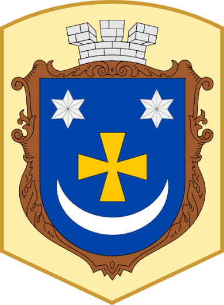
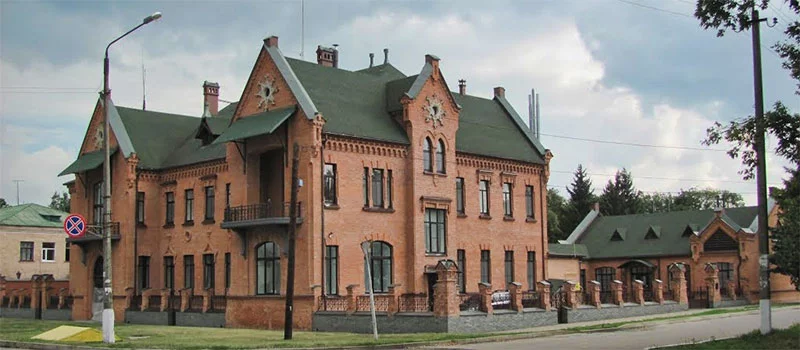
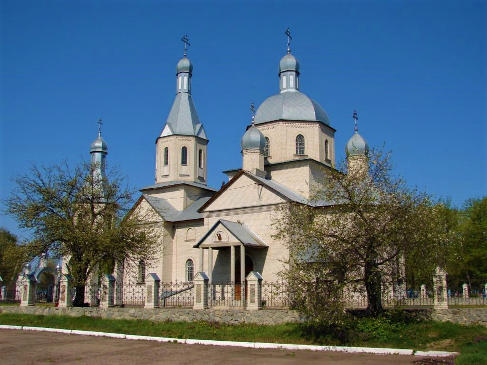

Зіньків — це місто в Полтавській області України, адміністративний центр Зіньківської міської громади.
Районний центр міста, розташований на р. Ташані за 82 км від
обласного центру м. Полтави та 308 км від м. Києва. Відповідно до статистичних даних останнього Всеукраїнського
перепису населення (05.12.2001) кількість його мешканців становила 10393 особи.
За легендою, назва міста походить від імені отамана Зиновія (Зінька) Безрідного, який в старості заснував хутір
на березі р. Ташані. Перша згадка про місто датується 1604 р.

Окрасою духовної спадщини сучасного Зінькова є храм Різдва Христового. Мурована святиня зі світлої цегли,
увінчана банями та стрункою дзвіницею, була зведена вже за часів незалежності України та стала важливим духовним
і культурним осередком для жителів міста.
